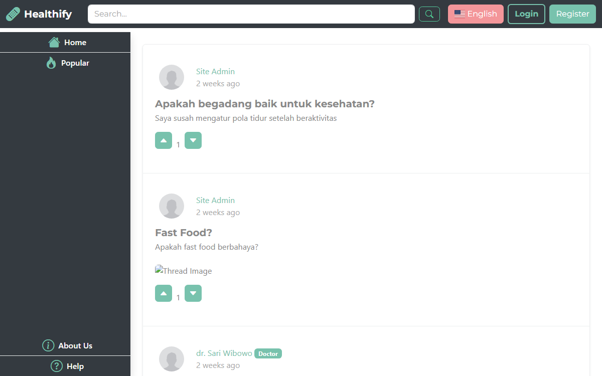

Healthify
A community health forum connecting everyday users with verified doctors, built end to end with PHP and Laravel — from account roles and thread voting to multi-language support.
- Year
- 2024
- Role
- Frontend Developer
- Type
- Course project
- Tools
- PHP, Laravel, MySQL

A forum where health
questions get real answers
Health Forum connects people with verified doctors and health-minded peers. I built the account system, thread and comment flow, upvote/downvote scoring, doctor certificate verification, and English/Indonesian/Japanese localization on a PHP and Laravel backend.
Search results aren't a diagnosis
Everyday health questions — "is it okay to stay up all night," "is fast food actually dangerous" — don't need an ER visit, but they deserve more than a random article. There's no easy place to ask a real doctor and get an answer worth trusting.
Curious people and the doctors who answer them
Students, remote workers, and anyone with a health question they'd rather not Google — plus registered doctors who want to share expertise and build a credible public presence.
Reviews pending Doctor applications, approves or rejects the badge
Four roles, one forum
Access widens in steps, so the barrier to reading is low while the barrier to a doctor's badge — and to moderation — stays high enough to trust.
- Guest
- Browse threads, read discussions, no account needed
- User
- Register, create threads, comment, upvote or downvote
- Doctor
- Everything a User can do, plus a verified badge after certificate review
- Admin
- Reviews pending doctor applications, approves or rejects the “Doctor” badge
How the core features behave
Four flows carry most of the app's logic, from proving a doctor's credentials to reading the forum in three languages. Select one to see it up close.
Doctor Registration
Choosing the Doctor role swaps in one required field: a certificate upload. The account stays pending until an admin verifies it, so the “Doctor” badge on the forum always means something.